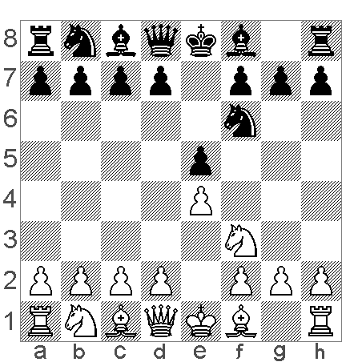

Obrona rosyjska
Obrona rosyjska, znana również jako Obrona Petroffa lub Obrona Petrowa, to solidne i strategiczne otwarcie w szachach, które charakteryzuje się ruchami 1.e4 e5 2.Nf3 Nf6. Jest to jedno z najstarszych otwarć, a swoje imię zawdzięcza rosyjskiemu mistrzowi szachowemu Aleksandrowi Dmitrijewiczowi Petrowowi, który analizował i popularyzował to otwarcie w XIX wieku.
### Kluczowe cechy obrony rosyjskiej:
1. **Symetryczna struktura**:
- Obrona rosyjska jest symetrycznym otwarciem, co oznacza, że obie strony dążą do kontroli centrum poprzez rozwinięcie skoczków i otwarcie pozycji dla swoich figur. Symetryczna natura tego otwarcia często prowadzi do spokojniejszych, strategicznych pozycji, choć nie brakuje możliwości na bardziej dynamiczną grę.
2. **Solidność i odporność**:
- Obrona rosyjska jest znana ze swojej solidności i odporności na ataki. Czarne, odpowiadając symetrycznie na ruch białych, dążą do stworzenia stabilnej pozycji, w której trudno jest przeciwnikowi zyskać natychmiastową przewagę.
3. **Unikanie teoretycznych pułapek**:
- W przeciwieństwie do bardziej skomplikowanych otwarć, takich jak Obrona Sycylijska czy Obrona Francuska, Obrona rosyjska unika wielu głębokich, teoretycznych linii i pułapek. Jest to otwarcie preferowane przez graczy, którzy chcą uniknąć skomplikowanych i dobrze zbadanych wariantów.
### Główne linie w obronie rosyjskiej:
1. **Klasyczny wariant (3. Nxe5)**:
- 1.e4 e5 2.Nf3 Nf6 3.Nxe5 d6 4.Nf3 Nxe4
- Ten klasyczny wariant prowadzi do bardziej otwartej gry, gdzie obie strony starają się rozwijać swoje figury i kontrolować centrum. Białe zwykle kontynuują grę posunięciem d4, starając się utrzymać centralną przewagę.
2. **Wariant Steinitza (3. d4)**:
- 1.e4 e5 2.Nf3 Nf6 3.d4 Nxe4 4.Bd3 d5
- Wariant ten prowadzi do bardziej zamkniętej pozycji, w której obie strony starają się rozwijać swoje figury i przygotowywać do przełomów w centrum.
3. **Wariant cichy (3. Nc3)**:
- 1.e4 e5 2.Nf3 Nf6 3.Nc3
- Wariant ten prowadzi do bardziej spokojnych pozycji, gdzie białe starają się unikać wymiany skoczków i utrzymywać napięcie w centrum. Czarne mogą odpowiedzieć posunięciem Nc6, d5 lub Bb4, w zależności od preferencji.
### Znane partie i mistrzowie grający obroną rosyjską:
Obrona rosyjska była stosowana przez wielu wybitnych szachistów, w tym Garry'ego Kasparowa, Władimira Kramnika i Anatolija Karpowa. Dzięki swojej solidności i strategicznej naturze, była często wybierana w ważnych meczach turniejowych i mistrzowskich.
### Podsumowanie:
Obrona rosyjska to solidne, strategiczne otwarcie, które oferuje czarnym stabilną pozycję bez ryzyka wpadnięcia w teoretyczne pułapki. Jest idealna dla graczy, którzy preferują spokojniejszą grę z możliwością rozwinięcia swoich figur i przygotowania długoterminowych planów. Pomimo swojej prostoty, oferuje wiele subtelnych możliwości i wymaga od graczy precyzyjnego i dokładnego grania.
